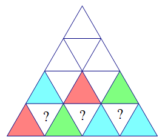

Project Euler 189
题目
Tri-colouring a triangular grid
Consider the following configuration of 64 triangles:

We wish to colour the interior of each triangle with one of three colours: red, green or blue, so that no two neighbouring triangles have the same colour. Such a colouring shall be called valid. Here, two triangles are said to be neighbouring if they share an edge.
Note: if they only share a vertex, then they are not neighbours.
For example, here is a valid colouring of the above grid:

A colouring \(C’\) which is obtained from a colouring \(C\) by rotation or reflection is considered distinct from \(C\) unless the two are identical.
How many distinct valid colourings are there for the above configuration?
解决方案
本题是一道基于三进制的状态压缩动态规划题目。
由于每一层的三角形中只有正三角形才会对下一层产生影响，倒三角形不会。因此我们描述每一层的状态时，只描述第\(k\)层的\(k\)个正三角形的涂色状态，因此，用一个\(k\)位三进制数\(b=b_{k-1}b_{k-2}\dots b_0\)来表示。其中，\(b_i\)只取值\(0,1,2\)，分别表示涂上的\(3\)种颜色。
令\(N=8\)，设\(f(i,j)(1\le i\le N,0\le j< 3^i)\)第\(i\)行中，涂色状态为\(j\)的方法有多少种。在这里，\(j\)表示成\(i\)位三进制数\(j_{i,i-1}j_{i,i-2}\dots j_{i,0}\)。
那么，考虑倒三角形的涂色方案，如下图所示：

确定了第\(i\)行和第\(i-1\)行的状态后，考虑转移。一个倒三角形填色的方案必须和相邻的三个正三角形的颜色不一样。第\(i\)行的\(i-1\)个倒三角形互不相邻，因此根据乘法原理，可以将这些填色方案相乘，完成转移。
可以列出如下状态转移方程：
\[ f(i,j)= \left \{\begin{aligned} &1 & & \mathrm{if\quad} i=1 \\ &\sum_{k=0}^{3^{i-1}-1}f(i-1,k)\cdot \prod_{l=0}^{i-1} \mathrm{excluded}(j_{i,l},j_{i,l+1},k_{i-1,l})& & \mathrm{else} \end{aligned}\right. \]
其中，函数\(\mathrm{excluded}(a,b,c)\)表示集合\(\{0,1,2\}\)去掉元素\(a,b,c\)后的大小。
那么最终结果为：
\[\sum_{j=0}^{3^N-1}f(N,j)\]
代码
1 |
|